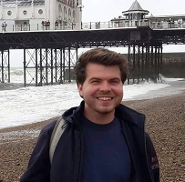

What is my story?

FORMAL CV
Jakub – Remote Sensing data analyst. I have a Master's in geoinformatics and remote sensing with a background in cartography and physical geography.
During my studies at Charles University, I worked on several research projects, especially in Krkonose National Park, Czechia, where I honed my skills
in Deep Learning, Synthetic Aperture Radar and time series analysis. I am a firm believer in the value of temporal remote sensing data, as I explored
the value they bring during my Erasmus+ stay at HU Berlin and during my work on E-TRAINEE.
As a physical geographer, there is no surprise that I love the outdoors. Ever since I was a kid, my holidays were spent on summer camps (where I still
go as an instructor), cottages, hiking, canoeing... Even though I love nature, there is also something that deeply fascinates me about cities. Regardless
of if I live there or am just visiting, you can easily find me observing the urban fabric from public transit (grew up in Prague with its ~35 tram lines)
or wandering around random neighbourhoods. When winding down after a long day, I love to do same gaming (Civilization comes to mind), read (HP/discworld)
or watch something with a bit of a british dry humor (such as Yes, Minister). Nonetheless, there is nothing better than talking to inspiring people, be
they fellow students, mentors or someone else I have met through organizations like Youth for Understanding or EGEA.
Notable conferences/trainings
ISPRS Congress 2022 (Nice, France)
Received 3rd place in CATCON (Computer-assisted teaching contest) for
CNN Compare and presented a
paper on Weakly supervised learing
for treeline ecotone classification.
Co-authors: Markéta Potůčková, Václav Treml (Charles University)
Trans–Atlantic Training 2022 (Prague, Czechia)
This training was incredibly incredbly valuable, particularily for networking and as a way to understand differences between European and North American approaches to EO.
Tutors: Volker Radeloff (University Wisconsin–Madison), Jessica McCarty (Miami University), Sergii Skakun (University of Maryland), He Yin (Kent State University), Petya Campbell (NASA), Francesco Sarti (ESA), Přemysl Štych (Charles University), Pierre Louis Frisson (Université Paris-Est), Krištof Oštir (University of Ljubljana)
GISáček 2021 (Remote / Ostrava, Czechia)
2nd placed bachelor thesis – GIS-focused, international student thesis competition
EuroSDR EduServ 2020 (Paris, France)
EduServ gave me solid foundations in Deep Learning for RS and Point cloud analysis from leading researchers in the respective fields.
Tutors: Loic Landrieu (IGN France), Sébastien Lefèvre (Université Bretagne Sud), Bertrand Le Saux (ONERA), Martin Weinmann, Boris Jutzi (Karlsruhe Institute of Technology), Michael Weinmann (University of Bonn), Franz Rottensteiner (Leibniz Universität Hannover)